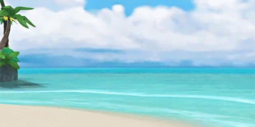

Akousa Barrett

I enjoy spending my free time gaming, drawing, and baking. My favorite game is Kingdom Hearts II, which is also why I chose a Kingdom Hearts GIF for my webpage. I enjoy gaming because I like getting immersed in different worlds and stories. Drawing gives me a way to be creative, while baking is something I enjoy because I can experiment with different recipes and make something I can share with others.
Applications I Might Build
- Windows XP Layout
- Windows Vista Layout
- Windows 7 Layout